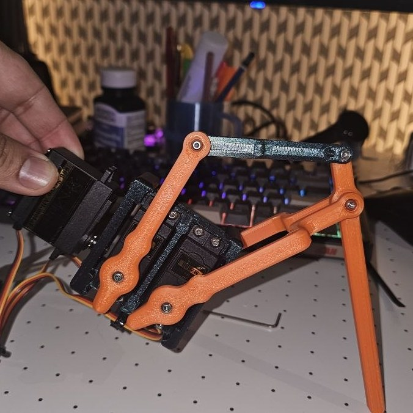
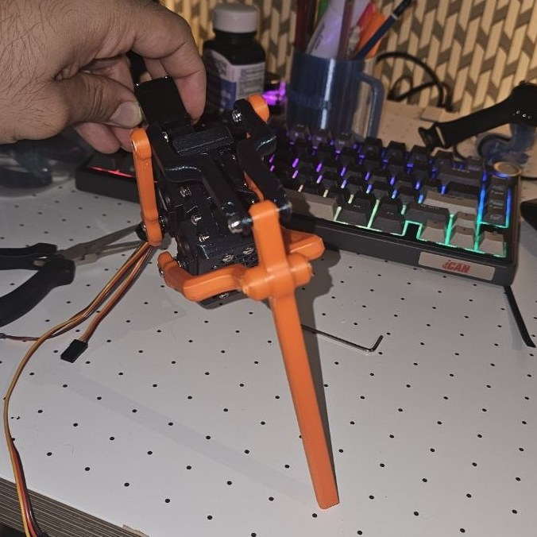
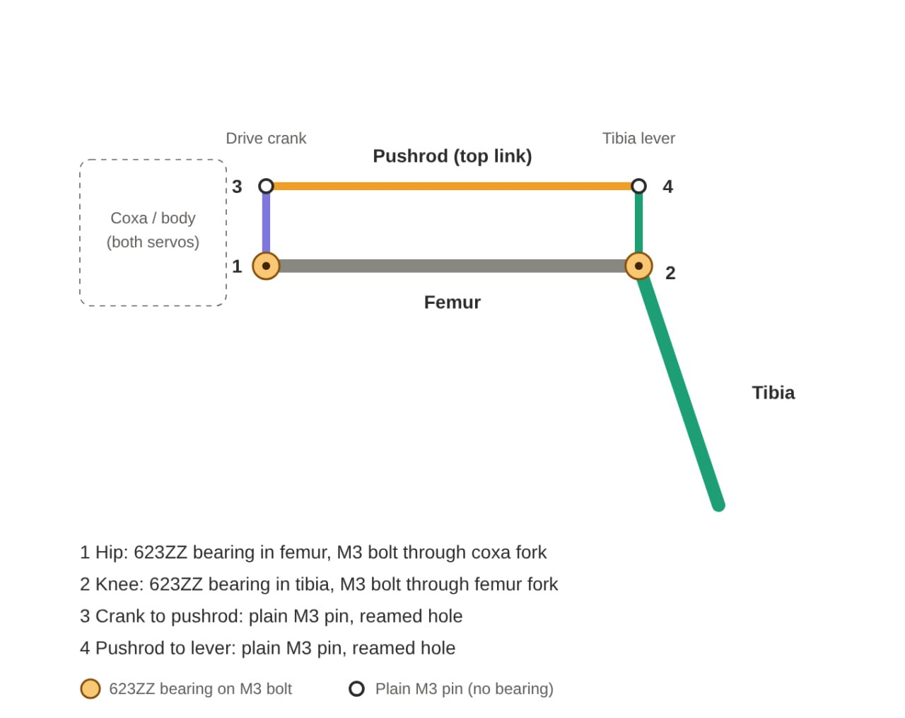
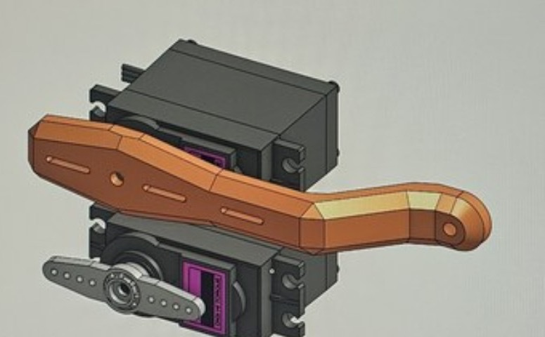
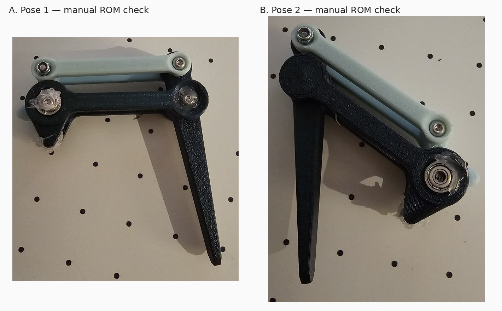
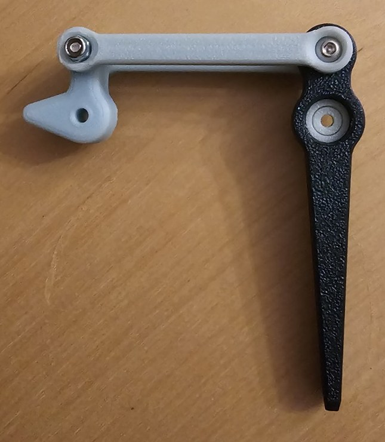

A 270 mm six-legged robot with every servo on the body and no motor at the knee — the knee is driven through a five-bar linkage instead. First milestone: one leg with all three joints moving, by 15 December 2026.
ℹ️
This page is written automatically by an AI agent from my working design document. Every number here is provisional until the part is printed, measured and loaded.
Milestone
One 3-DOF legby 15 Dec 2026
Stage
Leg 1 assembledall three joints, servos in one printed frame
Leg revision
V15printed and assembled


V15, photographed 10 November 2026 — side and front views of the assembled five-bar leg. All three joints are in it: the coxa plus the two body-side inputs that close the five-bar, with their servos in one printed frame and the matching CAD open behind.
The goal
Build a walking hexapod of about 270 mm, three degrees of freedom per leg, with all eighteen servos mounted on the body so the moving links stay light. The knee is the interesting part: there is no servo at the joint, so it has to be driven from the hip through a linkage.
The rule I set myself at the start was a basic moving leg before any aesthetic refinement or autonomy work — one leg, three joints, actually moving, before anything gets duplicated six times.
Targets — all provisional, all set to be failed against
Speed0.20 m/s on a flat indoor floor, timed over 2 m. 0.40 m/s would be a good day.
MassUnder 1.50 kg with battery. Designed against 1.60 kg as a load case.
RuntimeFifteen minutes of walking, not fifteen minutes powered on.
ObstacleClear a 20 mm threshold.
SizeAbout 270 mm, leg tip to leg tip.
Load caseAt 1.60 kg on three supporting feet, 5.2 N per foot.
Mechanical architecture
Three joints per leg — coxa yaw, femur pitch, knee — and all three servos bolt to the body, so almost no mass is swung out at the end of a leg. On V15 all three are in the assembly, their servos sharing one printed frame.
There is no servo at the knee. Both drive inputs sit back on the body and the chain closes through the leg as a five-bar, so the knee angle follows from where those two inputs are rather than from a motor at the joint. This arrived at V12: every revision up to V6 ran a four-bar, and the dated entries below still describe that older arrangement.
The tibia is one rigid printed link carrying both of its pivots as separate holes in the same piece. No intermediate hinge.
623ZZ ball bearings, 3 mm bore × 10 mm OD × 4 mm wide, at the hip and the knee — the two joints that carry the bending load. The remaining pivots are plain M3 bolts in reamed holes.
Bearing seats capture the outer race in the moving link; printed sleeves touch only the inner race, so tightening the nut clamps the stack without squeezing the joint shut.
CoxaYaw about a vertical axis, driven from under the body plate. This is the axis that aims the leg.
KneeDriven from the body through the five-bar chain. No servo at the joint.
Bearings12 of the 15 ordered go into six legs at two per leg, leaving 3 spare.
Plain pivotsPrinted undersize and reamed to a sliding fit on the M3, with a washer between the moving links.
The five-bar schematic has not been drawn yet — the photo at the top of the page is the current reference, and the diagram further down shows the four-bar arrangement it replaced.
Next I need to test the motion limits across the full chain. I will probably have to modify this geometry once I can see where it runs out of travel or binds.
Electronics architecture Designed, not built
Distributed control, chosen 22 October. One Raspberry Pi plans the gait; two ESP32s split the robot by physical side and do their own kinematics. None of it has been wired up yet, and the PWM driver choice is the part I am least sure of.
The Pi runs the gait state machine, plans each foot's XYZ waypoints, stamps them with a common start time and duration, and hands them to both boards. It does not stream individual servo increments.
Each ESP32 takes three legs — nine channels — and is nobody's master. It validates the command, aligns to the shared start time, interpolates, runs inverse kinematics, clamps geometry and speed limits, and reports completion or fault. One board can run stored trajectories on the bench without the Pi.
The left/right split is about keeping wiring short and the harness mirrored. The tripod gait is a software grouping and cuts across both boards.
A PCA9685 per side generates the servo PWM, because a stock ESP32 does not have nine good PWM outputs to spare. This is the least settled box on the diagram.
The inverse kinematics has to model the five-bar chain, mapping the two body-side input angles to the foot. Treating the tibia as a directly driven servo joint would be wrong, and is the specific mistake this mechanism invites.
Hobby RC servos report nothing back. Forward kinematics gives an expected foot position, never a measured one, and labelling an open-loop estimate as actual position is a trap I want to stay out of.
Servos run from a separate regulated rail sharing ground with the logic — never off a 3.3 V board pin. Leg 1 on the bench needs 6 V at 7.5 A peak, which is three MG996Rs stalling at once.
Where it actually is
Built
Tibia link printed, black PLA, roughly 80 mm
Knee crank–pushrod linkage bolted up with a bearing seated
First full leg assembled — and the femur fractured doing it
V6 leg reprinted and assembled with nothing broken
One MG996R servo received
Servo and horn arm modelled in Onshape
V12 leg printed and assembled, slimmer again than V6
Servo bracket printed, with the servos mounted on the leg
V15 assembled with all three joints, three servos in one printed frame
Designed, not built
Every piece of electronics — Pi, both ESP32s, both PCA9685s, harness, power rail
Inverse kinematics and gait code
Legs 2 to 6, the body plate, the battery
There is no measured figure anywhere on this page — no torque, current, range of motion, friction or deflection number, and the servo's own weight, usable travel, pulse range and horn fit are all still unrecorded. The dated entries below each describe the revision they were written against, not V15.
Decisions and iterations
V15, with all three joints in one frame. Three revisions on from V12 and the leg now carries every joint it is supposed to have — the coxa plus the two body-side inputs that close the five-bar — with all three servos stacked into a single printed frame instead of the bracket V12 used. That closes the coxa question I left open yesterday: the axis is in the assembly, not just the CAD.
Next I need to test the motion limits across the full chain, and I expect to modify this geometry once I can see where it runs out of travel or binds.
V12, and the knee is a five-bar now. I moved off the four-bar that every revision up to V6 used — V12 closes the chain as a five-bar instead. It is also the first leg that is printed, assembled and carrying its servos on a printed bracket, with more bulk taken out of the links again, and I can pick the whole thing up by one end with no glue in it, which I could not do with the leg that cracked in October.
Still open: the coxa axis, and whether I can package eighteen MG996R cases inside a body that is meant to come in under 1.50 kg.

What V12 replaced: the four-bar, crank to pushrod to tibia lever, with bearings drawn at the two loaded joints and plain pins at the rest. The bearing and pin choices carried over; the topology did not.
First servo in hand, and in CAD. The MG996R arrived and is now modelled in Onshape with its horn arm, so the mounts get drawn around the real shape instead of a datasheet drawing. It stays the tentative leg 1 servo until the arrival checks are done — weight, usable travel, pulse range per unit, horn spline fit on the printed hubs, deadband jitter at rest.

The Onshape assembly — two MG996R models with the printed arm on the upper horn. Photographed off the screen rather than exported, so it is soft.
Swapped to a servo I know is too heavy. I bought three Miuzei MG996Rs for leg 1 instead of the 17 g AGFRC B13DLM V2 I had been considering. The MG996R gives 11 kgf·cm stalled at 6 V against the B13DLM's 3.8, and at an illustrative 100 mm foot reach the 5.2 N static load needs about 5.3 kgf·cm at the femur — so the first powered test has roughly a factor of two in hand instead of none.
The cost is weight, and it is not a small one. At 55 g each, eighteen come to about 990 g against a 378 g servo budget, putting the whole robot at roughly 1.56–1.98 kg — over the 1.50 kg target. The bigger case also makes hiding servos inside the body harder. I took it for leg 1 only; the eighteen-servo choice stays open until one leg has been loaded.
V6 went together without breaking. The reprinted leg is visibly slimmer than the one that cracked and assembled clean — the first build that did. The crank still hits its own fasteners before the end of its travel, so that is the open fault, and the hold point is explicit: resolve the interference and show smooth unpowered motion before any servo mount is finalised or any load is applied.
Split the control problem by side. One Pi for gait, two ESP32s for nine servos each, divided left and right. The reason is wiring length and a mirrored harness, not the gait itself — the tripod grouping cuts across both boards and lives in software. It also means one board and one leg is a complete bench setup, which is what I actually need next.
The femur broke while I was assembling it. The knee half went together fine — crank, pushrod and tibia bolted up with the bearing seated. Adding the femur to make the first whole leg split it during assembly, and several of the M3 lengths I had picked turned out wrong for their joint stacks. Hot glue is holding it for hand-set poses only; nothing gets driven or loaded on a glued leg.
What I took from it: measure the whole grip stack — link thicknesses, bearing, sleeves, washers, nut — before choosing a bolt length, get full nyloc engagement without using the nut to crush a free pivot, check clearance and free rotation at all three moving joints before final tightening, and reinforce the fractured section around the pivot bosses while reviewing print orientation.

Both poses set by hand. The clear smears at the pivots are hot glue holding it for this check and nothing else.

Earlier the same day — the knee half on its own, bearing already seated in the tibia. That is the joint the femur bolts to.
Full dated log
V15, all three joints. Coxa plus the two body-side five-bar inputs, their three servos in one printed frame instead of V12's bracket. Motion limits across the chain still to test, and the geometry will probably change once they are.
V12 assembled, servos mounted. Printed and bolted together, slimmer again than V6, and carrying its servos on a printed bracket for the first time. No glue holding it.
MG996R received, and modelled. First of the three servos in hand; servo and horn arm now in Onshape. Arrival checks all still open.
MG996R chosen for leg 1. Three bought on 26 Oct, replacing the B13DLM as the candidate. Three times the stall torque, three times the weight. Also pinned an AI-made render of the finished robot as a styling reference — it shows a servo at every joint, which is the one thing this design does not do, so it is not on this page.
V6 assembled, no breakages. Slimmer than the leg that cracked. Crank interference still unresolved. Next build is a provisional coxa bracket for a manual 3-DOF test.
Controller architecture selected. One Pi, two ESP32s split left and right, nine servos each. Servo model, PWM driver and power budget stay open.
First full leg, and the first breakage. Knee linkage assembled in the morning; the femur fractured during full-leg assembly and several bolt lengths were wrong for their stacks. Hot-glued for hand poses only.
Pushrod pivot note. For the walking build, a rigid sleeve plus washers and a nyloc — the sleeve gives a solid clamping path so tightening cannot squeeze the rotating link. Nyloc stops loosening; it does not stop binding.
A 17 g servo, considered. AGFRC B13DLM V2 — 17 g, 3.8 kgf·cm at 6 V, US$19.99 each, eighteen for US$359.82. Small enough to hide in the body but torque unproven. Superseded on 28 Oct.
Coaxial hip, corrected. Femur and crank on one axis, separate hubs, rigid single-piece tibia.
Three handles before three servos. Handles A and B coaxial on the hip, C under the body for coxa yaw. Each hub copies the future servo's bolt pattern so servos drop into the same holes later.
Four joints, two bearings. 623ZZ at hip and knee, plain M3 pins at both pushrod ends. Twelve needed, fifteen ordered.
First printed part. Tapered tibia link in black PLA, roughly 80 mm by eye. Length, thickness, both hole diameters and the hole spacing all still to be measured with calipers.
Targets written down, parts ordered. CA$24.90 of a CA$50 goods budget — an M3 screw, nut and washer assortment and fifteen 623ZZ bearings. Spacers get printed, not bought. Targets set early so a stopwatch can prove them wrong.